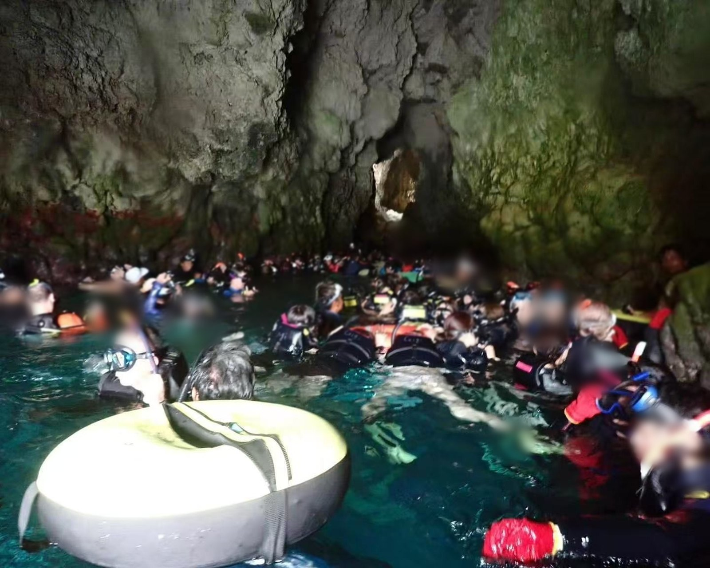
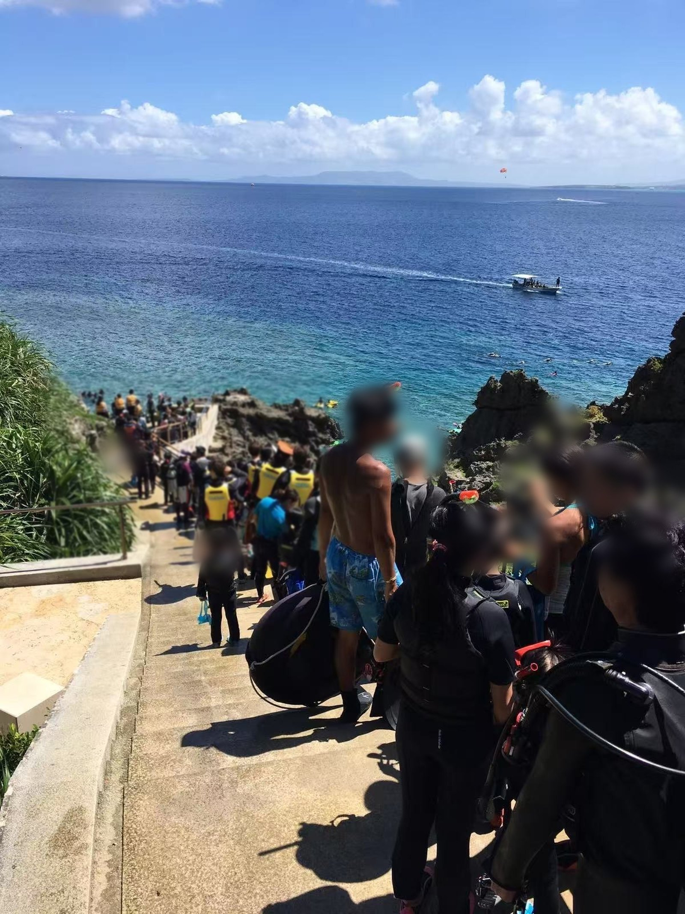
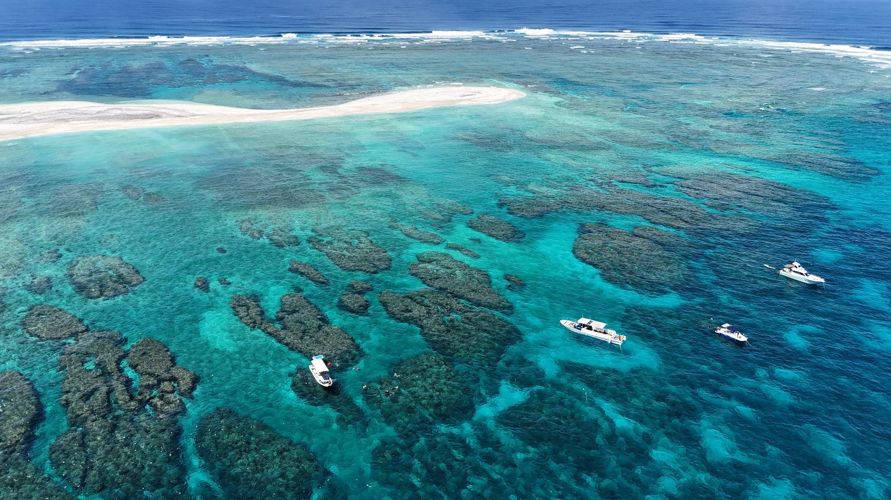
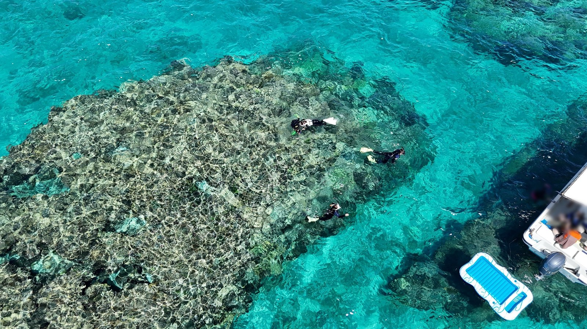

Search "Okinawa snorkeling" and you'll see the same photo a hundred times: a diver silhouetted against glowing blue water inside a cave. That's the Blue Cave — 青の洞窟 (Ao no Dōkutsu), on the Maeda Misaki (真栄田岬) cape in Onna Village.
It's real. It's genuinely beautiful. And in July, August and September, you may queue thirty or forty minutes at the mouth of it — and still not get in.

The cave is small. Every operator on the island sends groups there, all day, every day. The photos you've seen were taken in the gaps between them.

Blue Cave Meeting Point
For Blue Cave snorkeling, the meeting point is Maedamisaki Parking Lot (真栄田岬駐車場). For regular cars, parking is ¥100 for the first hour, then ¥100 for each additional 60 minutes. Private charter meeting points are confirmed separately.
Where We Actually Take People
チービシ (Chībishi) is a cluster of uninhabited islands out west of the main island — sandbar and reef, no village, no road, no way in except by boat. That's the whole point. You can't drive to it, so it never fills up the way a roadside cape does.
The water there doesn't read as blue. It reads as clear — so still and so thick with light that it looks almost solid, like something you could hold. People who have seen it try to describe it and end up saying the same thing: it doesn't look like water.

No queue. No group waiting behind you. If you want to float in one spot for twenty minutes over a single coral head, nobody moves you along.

"But I Can't Swim"
You don't need to. Everyone wears a flotation vest the whole time, and your guide is in the water with you.
The only real requirement is that you're not afraid of water. Non-swimmers are fine. People who panic when their feet leave the bottom are not — and we'd rather say that now than at sea.
Ages 2 to 69 can enter the water. Over 70 is welcome aboard.
What's Included
Blue Cave snorkeling is ¥9,000 per person, tax included. Pickup, a private guide, or switching to a Chibishi/Kerama plan changes the price — just ask.
Your guide is Itsuki: from Osaka, 20s, licensed diver (潜水士 / sensuishi), PADI Divemaster, qualified PE teacher. He's the one in the water next to you.
FAQ
Q: Is the Blue Cave worth visiting?
A: It's beautiful, but small and crowded. In July, August and September expect to wait, sometimes over thirty minutes, with no guarantee of entry. If the photo matters most to you, go. If the experience matters most, go somewhere less famous.
Q: Can you take us to the Blue Cave anyway?
A: Yes. We'd just rather you knew what you were choosing.
Q: Do I need to be able to swim?
A: No. Vests are worn throughout and a guide is in the water with you. You do need to be comfortable in water.
Q: Where do we meet for Blue Cave snorkeling?
A: Blue Cave snorkeling meets at Maedamisaki Parking Lot (真栄田岬駐車場). For regular cars, parking is ¥100 for the first hour, then ¥100 for each additional 60 minutes. Private charter meeting points are confirmed separately.
Q: How do we get to Chibishi?
A: By boat. We meet at Ginowan Marina and it's a 30–40 minute run out. Chibishi is uninhabited, so there's no other way in.
Q: When do you go out?
A: Twice a day, morning and afternoon, every day. We also run private sunset charters.
Ready to see the part of Okinawa that isn't in the queue? Message us.